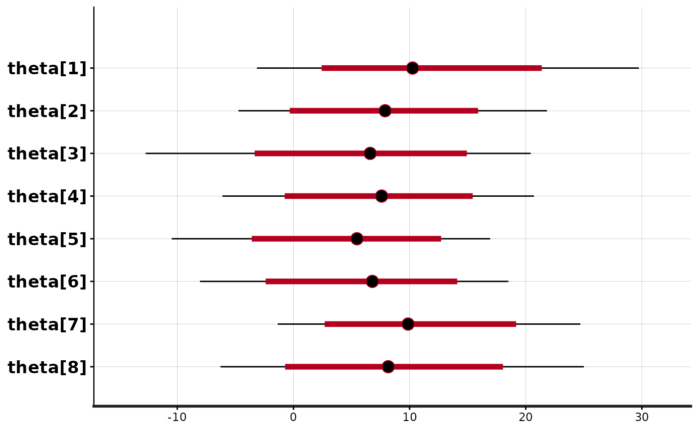
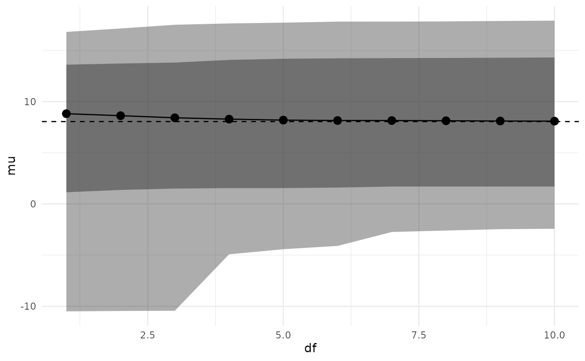
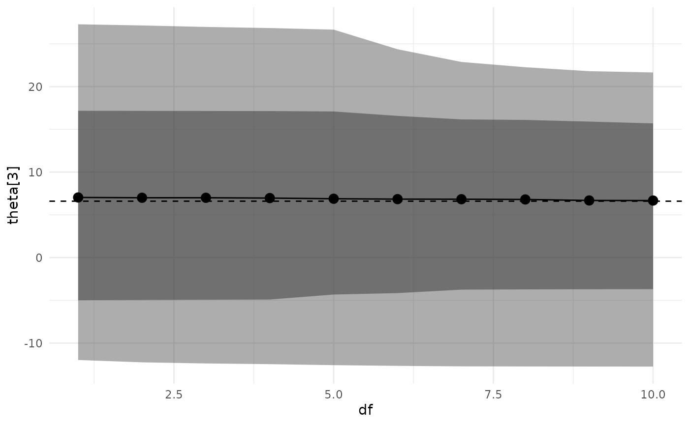

Introduction
This vignette walks through the process of performing sensitivity
analysis using the adjustr package for the classic
introductory hierarchical model: the “eight schools” meta-analysis from
Chapter 5 of Gelman et al. (2013).
We begin by specifying and fitting the model, which should be familiar to most users of Stan.
library(dplyr)
library(rstan)
library(adjustr)
model_code = "
data {
int<lower=0> J; // number of schools
real y[J]; // estimated treatment effects
real<lower=0> sigma[J]; // standard error of effect estimates
}
parameters {
real mu; // population treatment effect
real<lower=0> tau; // standard deviation in treatment effects
vector[J] eta; // unscaled deviation from mu by school
}
transformed parameters {
vector[J] theta = mu + tau * eta; // school treatment effects
}
model {
eta ~ std_normal();
y ~ normal(theta, sigma);
}"
model_d = list(J = 8,
y = c(28, 8, -3, 7, -1, 1, 18, 12),
sigma = c(15, 10, 16, 11, 9, 11, 10, 18))
eightschools_m = stan(model_code=model_code, chains=2, data=model_d,
warmup=500, iter=1000)We plot the original estimates for each of the eight schools.
plot(eightschools_m, pars="theta")
#> ci_level: 0.8 (80% intervals)
#> outer_level: 0.95 (95% intervals)
The model partially pools information, pulling the school-level treatment effects towards the overall mean.
It is natural to wonder how much these estimates depend on certain
aspects of our model. The individual and school treatment effects are
assumed to follow a normal distribution, and we have used a uniform
prior on the population parameters mu and
tau.
The basic adjustr workflow is as follows:
Use
make_specto specify the set of alternative model specifications you’d like to fit.Use
adjust_weightsto calculate importance sampling weights which approximate the posterior of each alternative specification.Use
summarizeandspec_plotto examine posterior quantities of interest for each alternative specification, in order to assess the sensitivity of the underlying model.
Basic Workflow Example
First suppose we want to examine the effect of our choice of uniform
prior on mu and tau. We begin by specifying an
alternative model in which these parameters have more informative
priors. This just requires passing the make_spec function
the new sampling statements we’d like to use. These replace any in the
original model (mu and tau have implicit
improper uniform priors, since the original model does not have any
sampling statements for them).
spec = make_spec(mu ~ normal(0, 20), tau ~ exponential(5))
print(spec)
#> Sampling specifications:
#> mu ~ normal(0, 20)
#> tau ~ exponential(5)Then we compute importance sampling weights to approximate the posterior under this alternative model.
adjusted = adjust_weights(spec, eightschools_m)The adjust_weights function returns a data frame
containing a summary of the alternative model and a list-column named
.weights containing the importance weights. The last row of
the table by default corresponds to the original model specification.
The table also includes the diagnostic Pareto k-value. When
this value exceeds 0.7, importance sampling is unreliable, and by
default adjust_weights discards weights with a Pareto
k above 0.7 (the respective rows in adjusted are
kept, but the weights column is set to
NA_real_).
print(adjusted)
#> # A tibble: 2 × 4
#> .samp_1 .samp_2 .weights .pareto_k
#> <chr> <chr> <list> <dbl>
#> 1 mu ~ normal(0, 20) tau ~ exponential(5) <dbl [1,000]> 0.569
#> 2 <original model> <original model> <dbl [1,000]> -InfFinally, we can examine how these alternative priors have changed our
posterior inference. We use summarize to calculate these
under the alternative model.
summarize(adjusted, mean(mu), var(mu))
#> # A tibble: 2 × 6
#> .samp_1 .samp_2 .weights .pareto_k `mean(mu)` `var(mu)`
#> <chr> <chr> <list> <dbl> <dbl> <dbl>
#> 1 mu ~ normal(0, 20) tau ~ exponential(… <dbl> 0.569 7.93 23.7
#> 2 <original model> <original model> <dbl> -Inf 7.98 26.7We see that the more informative priors have pulled the posterior
distribution of mu towards zero and made it less
variable.
Multiple Alternative Specifications
What if instead we are concerned about our distributional assumption
on the school treatment effects? We could probe this assumption by
fitting a series of models where eta had a Student’s
t distribution, with varying degrees of freedom.
The make_spec function handles this easily.
spec = make_spec(eta ~ student_t(df, 0, 1), df=1:10)
print(spec)
#> Sampling specifications:
#> eta ~ student_t(df, 0, 1)
#>
#> Specification parameters:
#> df
#> 1
#> 2
#> 3
#> 4
#> 5
#> 6
#> 7
#> 8
#> 9
#> 10Notice how we have parameterized the alternative sampling statement
with a variable df, and then provided the values
df takes in another argument to make_spec.
As before, we compute importance sampling weights to approximate the
posterior under these alternative models. Here, for the purposes of
illustration, we are using keep_bad=TRUE to compute weights
even when the Pareto k diagnostic value is above 0.7. In
practice, the alternative models should be completely re-fit in
Stan.
adjusted = adjust_weights(spec, eightschools_m, keep_bad=TRUE)Now, adjusted has ten rows, one for each alternative
model.
print(adjusted)
#> # A tibble: 11 × 4
#> df .samp .weights .pareto_k
#> <int> <chr> <list> <dbl>
#> 1 1 eta ~ student_t(df, 0, 1) <dbl [1,000]> 1.04
#> 2 2 eta ~ student_t(df, 0, 1) <dbl [1,000]> 0.954
#> 3 3 eta ~ student_t(df, 0, 1) <dbl [1,000]> 0.880
#> 4 4 eta ~ student_t(df, 0, 1) <dbl [1,000]> 0.868
#> 5 5 eta ~ student_t(df, 0, 1) <dbl [1,000]> 0.830
#> 6 6 eta ~ student_t(df, 0, 1) <dbl [1,000]> 0.793
#> 7 7 eta ~ student_t(df, 0, 1) <dbl [1,000]> 0.765
#> 8 8 eta ~ student_t(df, 0, 1) <dbl [1,000]> 0.753
#> 9 9 eta ~ student_t(df, 0, 1) <dbl [1,000]> 0.736
#> 10 10 eta ~ student_t(df, 0, 1) <dbl [1,000]> 0.731
#> 11 NA <original model> <dbl [1,000]> -InfTo examine the impact of these model changes, we can plot the
posterior for a quantity of interest versus the degrees of freedom for
the t distribution. The package provides the
spec_plot function which takes an x-axis specification
parameter and a y-axis posterior quantity (which must evaluate to a
single number per posterior draw). The dashed line shows the posterior
median under the original model.
spec_plot(adjusted, df, mu)
spec_plot(adjusted, df, theta[3])
It appears that changing the distribution of
eta/theta from normal to t has a
small effect on posterior inferences (although, as noted above, these
inferences are unreliable as k > 0.7).
By default, the function plots an inner 80% credible interval and an outer 95% credible interval, but these can be changed by the user.
We can also measure the distance between the new and original
posterior marginals by using the special wasserstein()
function available in summarize():
summarize(adjusted, wasserstein(mu))
#> # A tibble: 11 × 5
#> df .samp .weights .pareto_k `wasserstein(mu)`
#> <int> <chr> <list> <dbl> <dbl>
#> 1 1 eta ~ student_t(df, 0, 1) <dbl [1,000]> 1.04 0.937
#> 2 2 eta ~ student_t(df, 0, 1) <dbl [1,000]> 0.954 0.687
#> 3 3 eta ~ student_t(df, 0, 1) <dbl [1,000]> 0.880 0.524
#> 4 4 eta ~ student_t(df, 0, 1) <dbl [1,000]> 0.868 0.414
#> 5 5 eta ~ student_t(df, 0, 1) <dbl [1,000]> 0.830 0.343
#> 6 6 eta ~ student_t(df, 0, 1) <dbl [1,000]> 0.793 0.273
#> 7 7 eta ~ student_t(df, 0, 1) <dbl [1,000]> 0.765 0.231
#> 8 8 eta ~ student_t(df, 0, 1) <dbl [1,000]> 0.753 0.195
#> 9 9 eta ~ student_t(df, 0, 1) <dbl [1,000]> 0.736 0.166
#> 10 10 eta ~ student_t(df, 0, 1) <dbl [1,000]> 0.731 0.152
#> 11 NA <original model> <dbl [1,000]> -Inf 0As we would expect, the 1-Wasserstein distance decreases as the
degrees of freedom increase. In general, we can compute the
p-Wasserstein distance by passing an extra p
parameter to wasserstein().